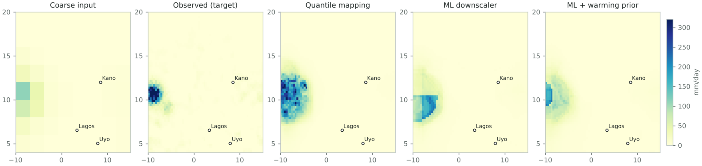
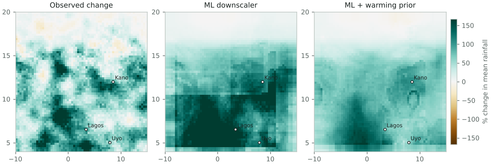

A distribution-shift test of machine-learning rainfall downscaling over West Africa.
Question
Machine-learning downscalers learn the link between coarse, large-scale weather and local rainfall from past data. Climate projection asks them to apply that link in a warmer future they have never seen. This study asks: when a downscaler is trained on an earlier period, how much does its skill on extreme rainfall degrade on a later, warmer period, and does a simple physical prior help?
Design
Set
Years
Days
Warming vs training (K)
Training
1981–2004
820
-0.00
In-distribution test (held-out early years)
1985, 1990, 1995, 2000, 2005
205
+0.27
Shifted test (later years)
2010–2024
300
+3.64
Domain 4.0–20.0°N, -10.0–15.0°E, June–September. Fine grid 64×64; coarse grid 8×8 (each coarse cell covers 8×8 fine cells). Predictors: moisture, large-scale ascent, temperature and coarse rainfall, bilinearly interpolated to the fine grid, plus elevation, position and season.
Quantile mapping (baseline): interpolate coarse rainfall, then map its distribution onto the observed distribution pixel by pixel. Values beyond the training range are extended additively.
ML downscaler: gradient-boosted trees with a Poisson loss, trained on 200,000 sampled pixel-days. Trees cannot predict beyond the range they were trained on.
ML + warming prior: the same model trained after rescaling moisture, rainfall and temperature to the training climate with a prior of 7% per K (Clausius–Clapeyron), then scaled back. This is the simplest way to put physical knowledge into the model.
ML 10–90% interval: the same features with quantile losses, scored by how often observations fall inside.
Results
Model
Mean bias % (in-dist)
Mean bias % (shifted)
P99 bias % (in-dist)
P99 bias % (shifted)
RMSE (in-dist)
RMSE (shifted)
Fine-scale power ratio
Quantile mapping
-4.1
+52.0
-9.6
+31.9
10.05
19.58
0.37
ML downscaler
-3.1
+30.5
-42.7
+25.8
9.04
18.50
0.44
ML + warming prior
-3.2
+5.4
-41.5
-31.7
9.01
14.90
0.08
Bias is (model − observed) ÷ observed. P99 is the 99th percentile of all pixel-day rainfall. The fine-scale power ratio compares spatial variability at scales finer than the coarse grid: 1.00 is right, below 1 is too smooth.
What the numbers say
The shifted test period is +3.37 K warmer than the in-distribution test years (domain-mean coarse temperature).
19.4% of shifted-period coarse moisture values lie above the training maximum for their grid cell (0.1% for held-out early years): this is how much true extrapolation the shift demands.
Quantile mapping (baseline): 99th-percentile rainfall bias moves from -9.6% in-distribution to +31.9% on the shifted period (+41.5 points).
ML downscaler (gradient boosting): 99th-percentile rainfall bias moves from -42.7% in-distribution to +25.8% on the shifted period (+68.5 points).
ML downscaler + warming prior: 99th-percentile rainfall bias moves from -41.5% in-distribution to -31.7% on the shifted period (+9.9 points).
Smallest extreme-rainfall bias on the shifted period: ML downscaler (gradient boosting).
ML downscaler (gradient boosting) reproduces 410% of the observed change in 99th-percentile rainfall (+257.0% vs +62.6%).
ML downscaler + warming prior reproduces 144% of the observed change in 99th-percentile rainfall (+90.1% vs +62.6%).
The 10-90% interval covers 77% of wet-day observations in-distribution and 79% on the shifted period (nominal 80%).
The ML downscaler keeps 44% of the observed fine-scale variability (power at scales finer than the coarse grid); below 100% means it is too smooth.
Does the model reproduce the change, not just the climate?
Model
Observed P99 change %
Predicted P99 change %
Share of change captured
Quantile mapping
+62.6
+137.2
219%
ML downscaler
+62.6
+257.0
410%
ML + warming prior
+62.6
+90.1
144%
Uncertainty interval: the ML 10–90% interval contains 77% of wet-day observations in-distribution and 79% on the shifted period; 20% of shifted wet days fall above its upper bound (nominal 80% inside, 10% above).

One heavy-rain day from the shifted period. Day 221 of 2018: the shifted-period day with the heaviest local rainfall. Each panel shares one colour scale. The coarse input is what a global model provides; it looks faint because coarse cells spread rain thinly. The other panels are attempts to recover the target from it.

Mean-rainfall change, early to late period. Change in mean JJAS rainfall from the held-out early years to the shifted period. Brown is drier, green is wetter. A downscaler suitable for climate projection must reproduce this pattern, not just today's climate.
Second test: trained on dry years, tested on wet years
Model
Mean bias %
P99 bias %
RMSE
Quantile mapping
+82.5
+46.9
23.94
ML downscaler
+16.9
-23.3
17.60
ML + warming prior
+11.6
-35.4
17.20
Training years (22 driest seasons) versus test years (11 wettest). This shift comes from natural variability rather than warming, so the warming prior is not expected to help here.
Interpretation
In this synthetic world, storm intensity grows faster with warming than moisture does (by construction: 7% per K for moisture plus 3% per K for storms). The warming prior assumes 7% per K, so it is deliberately incomplete. Any advantage it shows here is partly built in; the useful lesson is the test itself: in-distribution scores can look fine while the change signal and the extremes go wrong.
The test generalises directly to the real problem: train an emulator on convection-permitting simulations of one period and check it, period by period, on another, scoring the change signal and extremes rather than only average skill.
Limits
Synthetic mode is a toy world with simple, chosen physics. It is not a climate model.
Perfect-prognosis downscaling against observations is not emulation of a convection-permitting model; the Met Office CPM ensemble for Africa that the PhD would use is not public.
A shift of about a degree over a few decades is a weak proxy for end-of-century warming; the test probes the method, not future climate.
Gradient-boosted trees stand in for the deep models (U-Net, diffusion) used in current emulator work; they make the extrapolation failure easy to see but are not the state of the art.
Pixel-wise metrics ignore whether storms are organised realistically (e.g. mesoscale convective systems); object-based evaluation is a next step.
Next steps
Run on real data: ERA5 predictors and CHIRPS rainfall for 1981–present (scripts included).
Add a convolutional U-Net and a probabilistic generative model; compare their shift penalty with the trees.
With convection-permitting model output: train on present-day simulations, test on future simulations.
Reproducibility and disclosure
Generated 2026-10-07T13:53:20+00:00 by downscaling-shift-test 0.1.0 (Python 3.13.16) in 78.2 s. Seed 7. The full configuration is stored in results.json; rerunning with the same configuration reproduces these numbers.
Senior, C. A. et al. (2021). Convection-permitting regional climate change simulations for understanding future climate and informing decision-making in Africa. Bulletin of the American Meteorological Society, 102(6).
Kendon, E. J. et al. (2025). Potential for machine learning emulators to augment regional climate simulations in provision of local climate change information. Bulletin of the American Meteorological Society, 106(6).
Addison, H., Kendon, E., Ravuri, S., Aitchison, L. & Watson, P. A. G. Machine learning emulation of precipitation from km-scale regional climate simulations using a diffusion model. arXiv:2407.14158.
Hersbach, H. et al. (2020). The ERA5 global reanalysis. Quarterly Journal of the Royal Meteorological Society, 146(730).
Funk, C. et al. (2015). The climate hazards infrared precipitation with stations (CHIRPS). Scientific Data, 2, 150066.